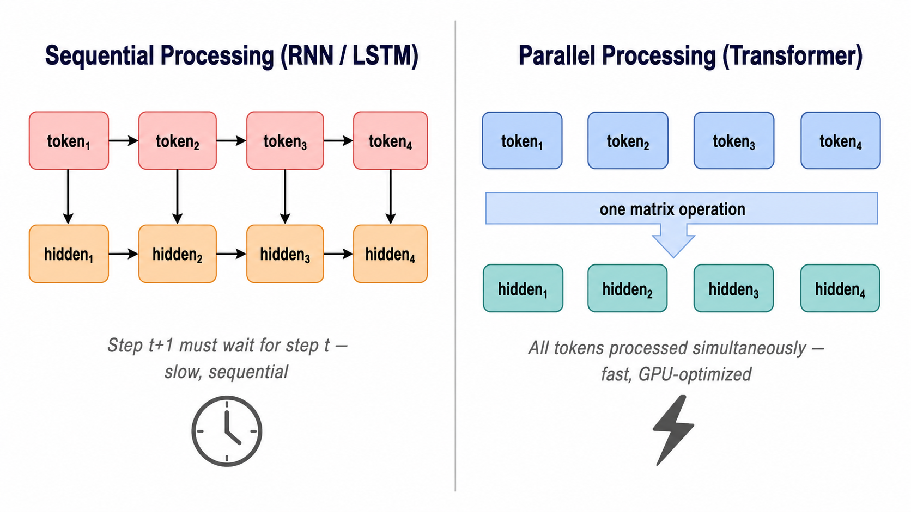
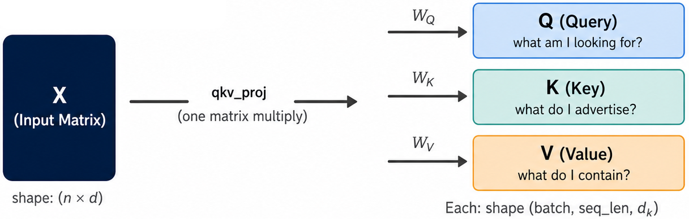
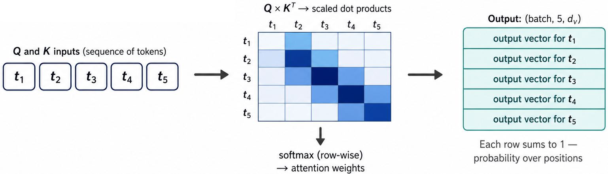
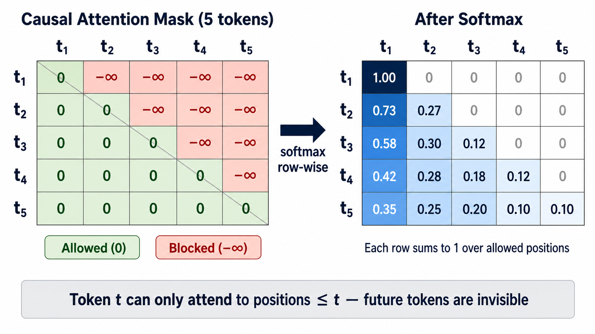
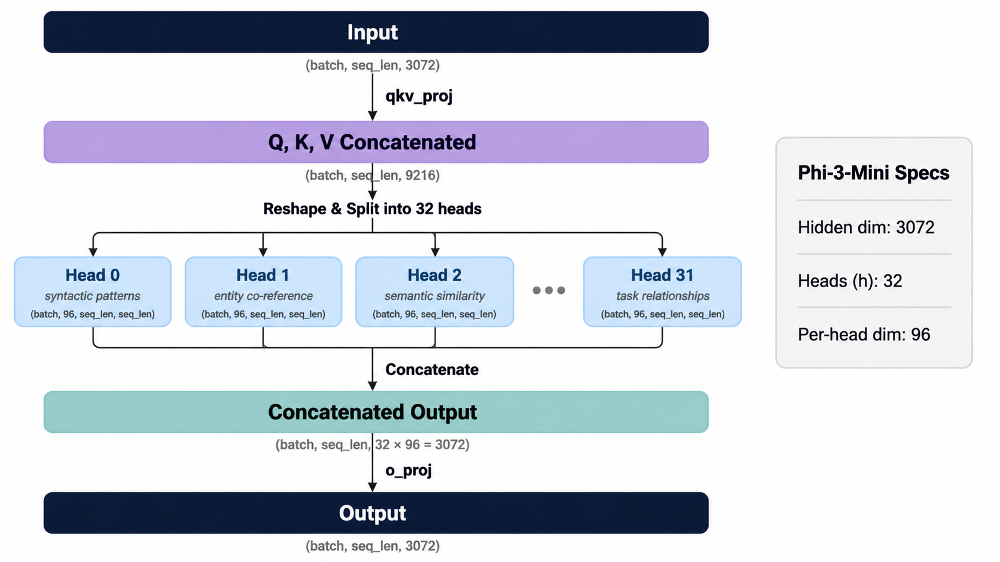
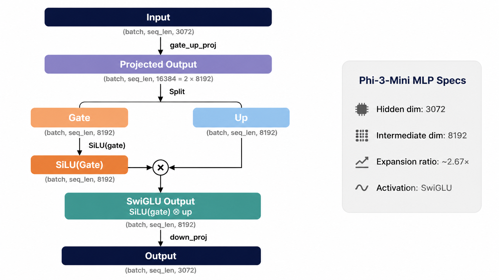
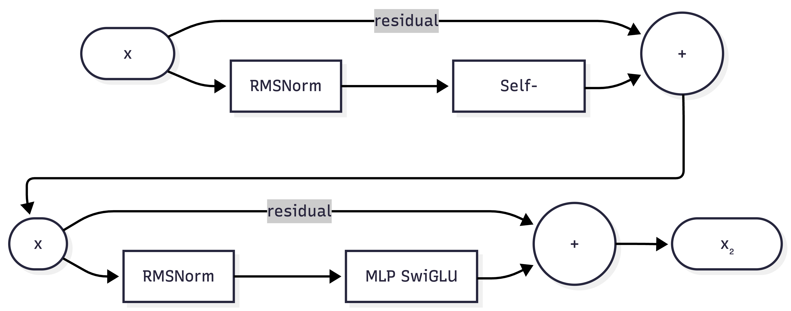

Remark
These lecture notes are in early access and will continue to evolve based on classroom experience and feedback.
5.3.2. Parallel Token Processing#
5.3.2.1. Learning objectives#
By the end of this section, you should be able to:
Explain how transformers process all tokens in a sequence simultaneously and contrast this with sequential recurrent models.
Describe the query-key-value (QKV) mechanism and explain how attention weights are computed as scaled dot products.
Explain the role of the causal attention mask in autoregressive generation.
Describe how Rotary Position Encoding (RoPE) encodes positional information within the attention computation.
Interpret multi-head attention as multiple parallel attention functions applied to projected subspaces.
Explain why parallel processing enables more efficient training and inference on modern hardware.
5.3.2.2. Sequential vs. Parallel Processing#
Before transformers, language models were built on recurrent neural networks (RNNs) and long short-term memory (LSTM) networks [Hochreiter and Schmidhuber, 1997]. These models processed text one token at a time in strict left-to-right order.
Transformers discard the recurrence entirely. Instead, all tokens are processed simultaneously through matrix multiplication, enabling a single parallel forward pass across all input tokens.
{kind=link}

Fig. 5.4 Sequential processing in RNNs/LSTMs (left) requires each hidden state to depend on the previous one, forcing step-by-step computation. Transformer parallel processing (right) computes all hidden states simultaneously via a single matrix operation, fully exploiting GPU parallelism during both training and inference.#
This is the central architectural advantage of transformers: by replacing sequential recurrence with parallel self-attention, they can exploit the full parallelism of modern GPU hardware during both training and inference.
The self-attention mechanism is the primary computational unit that distinguishes transformers from prior architectures. Before examining the formal equations, it is helpful to establish the role each component plays.
The input to self-attention is a matrix \(X \in \mathbb{R}^{n \times d}\), where each of the \(n\) rows is a \(d\)-dimensional vector representing one token in the sequence. The mechanism must decide, for each token, how much information to borrow from every other token. To make this decision, it needs two things from each token: a description of what it is looking for (the query), and a description of what it can offer (the key). The actual information transferred when a match is made is the value. All three are linear projections of the same input matrix — they differ only in their learned weight matrices, which allow the model to specialize each role independently.
5.3.2.3. Self-Attention: the Core Mechanism#
Definition — Self-Attention
Self-attention [Vaswani et al., 2017] is a mechanism that allows each token in a sequence to compute a weighted combination of all other tokens’ representations in a single parallel operation. The weights reflect how relevant each other token is to the current token, and are computed from the tokens themselves — hence “self”-attention.
Formally, given an input matrix \(X \in \mathbb{R}^{n \times d}\) (where \(n\) is sequence length and \(d\) is the hidden dimension), self-attention produces an output of the same shape by aggregating value vectors weighted by query–key similarities.
Self-attention allows every token to gather information from all other tokens in the sequence simultaneously. The computation proceeds in three steps.
5.3.2.3.1. Step 1: Project to Queries, Keys, and Values#
Definition — Query, Key, and Value
Self-attention uses three learned linear projections of the input:
Query (\(Q\)): represents “what this token is looking for” — the information it wants to gather from other tokens.
Key (\(K\)): represents “what this token advertises” — the kind of information it can provide.
Value (\(V\)): represents “what this token actually contains” — the information that will be aggregated if attention is paid to it.
Compatibility between a query and a key (their dot product) determines how much the corresponding value is incorporated into the output.
Given the hidden state matrix \(X \in \mathbb{R}^{n \times d}\) (sequence length \(n\), hidden dimension \(d\)), three linear projections produce queries (Q), keys (K), and values (V):
{kind=link}

Fig. 5.5 Step 1: Project to Queries, Keys, and Values#
In Phi-3-Mini, the qkv_proj layer computes all three simultaneously:
# qkv_proj: Linear(3072 → 9216) [= 3 × 3072]
# Efficient: one large matrix multiply rather than three separate ones
qkv = layer.self_attn.qkv_proj(hidden_states) # shape: (batch, seq_len, 9216)
# Split into Q, K, V each of shape (batch, seq_len, 3072)
q, k, v = qkv.split(3072, dim=-1)
The attention weight matrix captures, for each pair of positions \((i, j)\), how relevant token \(j\) is to token \(i\). It is computed as the dot product between the query at position \(i\) and the key at position \(j\). A high dot product indicates that the query and key vectors point in similar directions — geometrically, that the two tokens are compatible in the learned projection space.
The scaling factor \(1/\sqrt{d_k}\) is applied before the softmax because dot products grow in magnitude with the dimensionality of the vectors. Without scaling, large dot products push the softmax into regions where its gradient becomes negligibly small, making training unstable. Dividing by \(\sqrt{d_k}\) keeps the pre-softmax scores in a range where gradient flow remains healthy regardless of the head dimension.
The result of applying softmax row-wise is an \(n \times n\) matrix in which each row is a probability distribution over all \(n\) sequence positions. Multiplying this matrix by \(V\) produces a weighted sum of value vectors for each query position — the attended output.
5.3.2.3.2. Step 2: Compute Attention Weights#
Attention weights measure how much each token should attend to each other token. They are computed as scaled dot products between queries and keys [Vaswani et al., 2017]:
The scaling factor \(\frac{1}{\sqrt{d_k}}\) (where \(d_k\) is the key dimension) prevents the dot products from growing too large in magnitude, which would cause the softmax to saturate and produce near-zero gradients.
Definition — Softmax
For a vector \(z = (z_1, z_2, \ldots, z_n)\), the softmax function converts raw scores into a probability distribution:
In attention, softmax is applied row-wise to the scaled dot-product matrix, so each row sums to 1 and represents a probability distribution over sequence positions.
{kind=link}

Fig. 5.6 Step 2: Compute Attention Weights#
Each row of the attention weight matrix is a probability distribution over all sequence positions — it specifies how much the token at that position “attends to” (draws information from) each other position.
The attention weight matrix, if left unconstrained, would allow any token to attend to any other token — including tokens that appear later in the sequence. During training this is problematic because the model would have access to the answer it is supposed to predict. During generation it is structurally impossible, since future tokens have not yet been produced.
The causal mask enforces the autoregressive constraint by setting upper-triangular entries of the pre-softmax score matrix to \(-\infty\). When passed through softmax, \(e^{-\infty} = 0\), so those positions receive exactly zero attention weight. The result is that the attention weight matrix is strictly lower-triangular: position \(t\) can attend to positions \(1\) through \(t\), but never beyond. This constraint is not a restriction on what the model can learn — it is a structural guarantee that the model respects the ordering of tokens during both training and generation.
5.3.2.3.3. Step 3: Causal Masking for Autoregressive Generation#
Definition — Causal Attention Mask
A causal attention mask [Vaswani et al., 2017] is a lower-triangular binary (or \(\{0, -\infty\}\)) matrix applied to the attention score matrix before the softmax. It ensures that token \(t\) can only attend to tokens at positions \(\leq t\), preventing any token from “seeing” future tokens during generation.
After adding the mask, positions that should be blocked receive a score of \(-\infty\), which maps to \(0\) through softmax — effectively zeroing out those attention weights.
During generation, the model must not look at future tokens — it can only attend to positions that have already been generated. This is enforced with a causal attention mask: a lower-triangular matrix that sets all upper-triangular attention weights to \(-\infty\) before the softmax, effectively zeroing them out:
{kind=link}

Fig. 5.7 Step 3: Causal Masking for Autoregressive Generation#
This ensures the model respects the autoregressive constraint: the representation of token \(t\) is conditioned only on tokens \(t_1, t_2, \ldots, t_{t-1}\), never on future tokens.
A single attention function computes one weighted combination of value vectors per position. While expressive, a single function is limited in the variety of relationships it can represent simultaneously — for instance, a token might need to capture both a syntactic dependency with a nearby word and a semantic relationship with a distant one.
Multi-head attention addresses this by running \(h\) independent attention functions in parallel, each operating on a lower-dimensional projection of the queries, keys, and values. The projection matrices \(W_{Q_i}\), \(W_{K_i}\), \(W_{V_i}\) are learned separately for each head, so each head can specialize in attending to a different type of relationship. The outputs of all heads are concatenated along the feature dimension and projected back to the original hidden dimension via \(W_O\).
The total parameter count and computational cost are comparable to a single large attention function: splitting 3 072 dimensions across 32 heads of 96 dimensions each costs the same number of multiply-accumulate operations as one attention function over the full 3 072-dimensional space, but with substantially more representational diversity.
5.3.2.4. Multi-Head Attention#
Definition — Multi-Head Attention
Multi-head attention [Vaswani et al., 2017] runs \(h\) independent attention functions (“heads”) in parallel, each operating on a lower-dimensional projection of \(Q\), \(K\), and \(V\). The outputs are concatenated and linearly projected:
Using multiple heads allows the model to jointly attend to information from different representation subspaces — for example, one head may capture syntactic dependencies while another captures semantic similarity.
Rather than computing a single attention function over the full \(d\)-dimensional space, transformers split it into \(h\) parallel attention heads, each operating in a lower-dimensional subspace:
where each head \(i\) computes:
For Phi-3-Mini:
Hidden dimension: 3072
Number of heads: 32
Per-head dimension: 3072 / 32 = 96
{kind=link}

Fig. 5.8 Multi-head attention in Phi-3-Mini.#
Different heads learn to attend to different types of relationships in the data. Early layers tend to capture local syntactic patterns; later layers capture more abstract semantic relationships.
Standard self-attention is a set operation: permuting the rows of the input matrix \(X\) permutes the output rows in exactly the same way, with no other effect. This means the attention weights between any two tokens depend only on their content vectors, not on where they appear in the sequence. For language modeling this is a fundamental problem, since word order is a primary carrier of meaning.
Position encoding schemes inject order information into the computation. The key design question is whether positions are encoded absolutely (each position gets a fixed vector) or relatively (the model is given access to the distance between positions). Relative encoding is preferable because what matters linguistically is typically the relationship between two words — how far apart they are — not their absolute indices in the sequence. Absolute schemes also fail to generalize to sequence lengths longer than those seen during training, because they rely on a fixed set of learned or pre-computed position vectors.
RoPE encodes position by rotating the query and key vectors before the dot product is computed. Because both \(Q\) and \(K\) are rotated by position-dependent angles, their dot product depends only on the angular difference between the two positions — which is the relative displacement \(m - n\). This property arises directly from the geometry of rotations: rotating two vectors and taking their dot product is equivalent to taking the original dot product in a rotated frame, and the frame cancels out of the relative calculation.
5.3.2.5. Rotary Position Encoding (RoPE)#
5.3.2.5.1. Why Attention Alone Is Position-Blind#
Self-attention treats the input as an unordered set: if you permute the rows of \(X\) (i.e., shuffle token order), the attention weights simply permute in the same way, and the output is permuted identically. There is no inherent notion of “token 3 comes after token 2.”
This is a fundamental limitation for language, where word order is meaning-bearing. Position encoding schemes inject positional information into the computation so the model can distinguish sequences that differ only in word order.
A critical problem for fully parallel attention: without positional information, the model cannot distinguish “The cat sat on the mat” from “The mat sat on the cat” — both produce identical attention-weight matrices if word order is ignored.
Rotary Position Encoding (RoPE) [Su et al., 2021] encodes positional information by applying a position-dependent rotation to the query and key vectors before computing attention:
where \(R_m\) is a rotation matrix depending only on position \(m\). The dot product \(Q_m \cdot K_n\) then depends on the relative position \(m - n\) rather than absolute positions:
This has several advantages over earlier position encoding schemes:
Definition — Rotary Position Encoding (RoPE)
RoPE [Su et al., 2021] encodes position by rotating query and key vectors in 2D planes within the embedding space. The hidden dimension \(d_k\) is divided into \(d_k / 2\) pairs of dimensions; pair \(i\) is rotated by angle \(\theta_i = m / 10000^{2i/d_k}\) for a token at position \(m\).
The rotation matrix \(R_m\) is block-diagonal:
Because rotation is a linear operation, the dot product \(Q_m \cdot K_n\) depends only on the relative displacement \(m - n\), not on the absolute positions. This allows RoPE to generalize to sequence lengths longer than those seen during training.
Approach |
How positions are encoded |
Generalizes to longer sequences? |
|---|---|---|
Learned absolute (BERT) |
Separate embedding per position |
No — fixed at training length |
Sinusoidal (original transformer) |
Fixed sine/cosine waves |
Partial |
RoPE (LLaMA, Phi-3, Mistral) |
Rotation applied to Q, K in attention |
Yes — relative positions generalize |
RoPE is applied inside each attention layer by the rotary_emb module:
# Conceptual (simplified)
cos, sin = model.model.rotary_emb(v, seq_len=seq_len)
q_rotated = apply_rotary_pos_emb(q, cos, sin)
k_rotated = apply_rotary_pos_emb(k, cos, sin)
# Now attention(q_rotated, k_rotated, v) is position-aware
After each attention sublayer has finished mixing information across sequence positions, every token’s representation passes independently through an MLP block. This sublayer performs no communication between positions — it applies an identical nonlinear transformation to each token’s vector in isolation.
The separation of roles between the two sublayers is an important architectural property. Attention is responsible for determining which information from other positions should be incorporated; the MLP is responsible for how that representation should be transformed after the mixing has occurred. This decomposition allows the two components to specialize independently during training.
The SwiGLU activation used in Phi-3-Mini’s MLP differs from a standard two-layer feed-forward network in that it introduces a multiplicative gate. The projection is split into two streams of equal dimension: one stream passes through a SiLU activation to produce a gate, and the other is a linear projection. The gate modulates the linear projection element-wise. This mechanism allows the network to selectively suppress or amplify different dimensions of the intermediate representation, and has been shown empirically to outperform standard ReLU or GELU activations at the same parameter count.
5.3.2.6. The MLP Block: Position-Wise Feed-Forward#
Reminder — SwiGLU Activation
SwiGLU (Swish-Gated Linear Unit) [Shazeer, 2020] is the activation function used in the Phi-3-Mini MLP block. It applies a gating mechanism:
where \(\text{SiLU}(z) = z \cdot \sigma(z)\) is the Sigmoid Linear Unit [Elfwing et al., 2017] and \(\odot\) is element-wise multiplication. The gate \(\text{SiLU}(xW)\) modulates how much of the linear projection \(xV\) passes through, enabling expressive non-linear transformations with smoother gradients than ReLU.
After the self-attention sublayer, each token’s representation passes independently through an MLP block (also called the feed-forward network, FFN). This is applied identically to every token position — no information flows between positions in this sublayer:
{kind=link}

Fig. 5.9 MLP block (SwiGLU — Phi-3-Mini)#
The MLP block applies a non-linear transformation to each token’s representation in isolation. While attention is responsible for mixing information across positions, the MLP is responsible for applying learned transformations to each position independently.
Residual connections and normalization layers are not primary computational components in the sense that they do not implement attention or learned transformations — but they are essential for making deep networks trainable and stable.
Without residual connections, gradients must pass through every sublayer during backpropagation. In a 32-layer network, this means the gradient of the loss with respect to early-layer parameters is the product of 64 Jacobian matrices (two sublayers per layer). Such products routinely vanish to near-zero or explode to large magnitudes, making training of deep networks difficult in practice. The residual connection provides a direct path from the output back to the input, so gradients can bypass any sublayer that is not contributing useful signal.
Normalization controls the scale of the representations entering each sublayer. Without it, the hidden state magnitudes can drift across layers — growing large due to accumulated residual additions, as observed in the preceding section — and cause the projections within attention or the MLP to operate in extreme ranges where learning is slow. Pre-norm placement (normalizing before, rather than after, each sublayer) has been found empirically to produce more stable training dynamics at the scales used in modern LLMs.
5.3.2.7. Residual Connections and Layer Normalization#
Reminder — RMSNorm
Root Mean Square Layer Normalization (RMSNorm) [Zhang and Sennrich, 2019] normalizes a vector \(x\) by its root mean square rather than its mean and variance:
where \(\gamma\) is a learned per-dimension scale parameter. RMSNorm is faster than standard LayerNorm (no mean subtraction) and is used in Phi-3-Mini, LLaMA, and most modern LLMs. It is applied before each sublayer in the pre-norm configuration used here.
Every sublayer (attention and MLP) is wrapped in a residual connection:
This addition allows gradients to flow directly through the network without passing through the sublayer — critical for training very deep networks (32+ layers).
Normalization is applied before each sublayer in modern LLMs (pre-norm):
{kind=link}

Fig. 5.10 Pre-norm transformer layer structure. RMSNorm is applied before each sublayer (self-attention and MLP), followed by a residual addition that bypasses the sublayer. This “gradient highway” enables stable training across 32+ layers.#
This differs from the original transformer, which applied normalization after the residual addition (post-norm). Pre-norm has been found to produce more stable training at large scale.
5.3.2.8. Why Parallelism Matters at Scale#
The difference between sequential and parallel processing is not merely architectural — it directly determines how much training is feasible:
RNN training on 1 trillion tokens (sequential):
1T sequential steps — cannot be parallelized across time
Even at 1B ops/second: ~11 days per epoch, single stream
Transformer training on 1 trillion tokens (parallel):
Process 4,096 tokens per forward pass simultaneously
~244M forward passes — each is a large parallel matrix multiply
Scales linearly with GPU count: 1000 GPUs → ~1000× faster
GPT-3 (175B) {cite}`brown_gpt3_2020`: trained in ~3 weeks on 1,024 A100 GPUs
GPU hardware is optimized for large, regular matrix multiplications (the core of transformer attention and MLP layers). Transformers are, architecturally speaking, one of the best possible fits for GPU hardware — which is a significant reason they have dominated NLP since 2018.
5.3.2.9. Exercises and discussion#
Causal masking verification Load DistilGPT-2 with
output_attentions=Trueand run a forward pass on a 5-token input. Extract the attention weights from one head in one layer. Verify that the upper-triangular entries are zero (or very small after softmax). Which position attends to the most diverse set of other positions?Single vs. multi-head attention Conceptually, what could a single attention head with \(d_k = 3072\) capture that a single head with \(d_k = 96\) cannot? What is the advantage of using 32 smaller heads instead of one large head?
Positional encoding impact Take a simple factual sentence (e.g., “The dog chased the cat”) and permute the word order (e.g., “cat the chased The dog”). Run both through a causal LM and compare the top-5 next-token predictions. Do the predictions differ? What does this reveal about how well the model encodes word order?